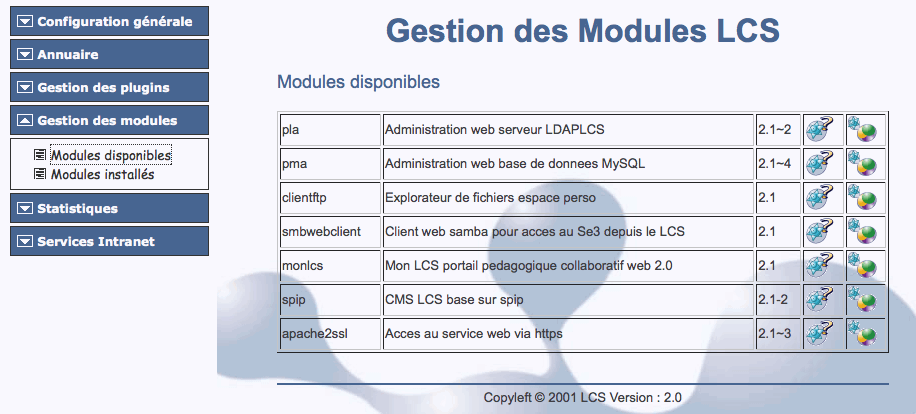
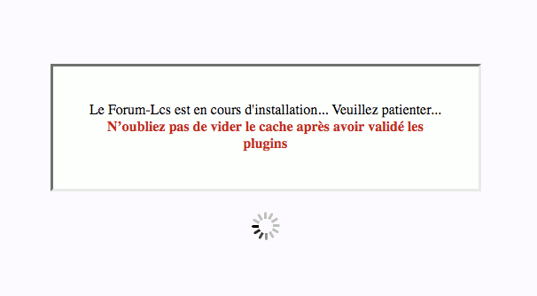
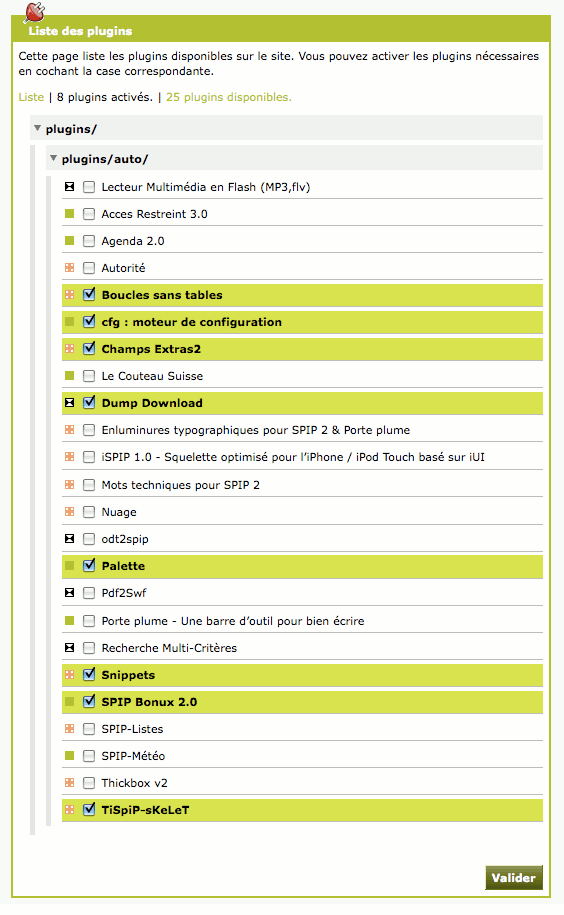
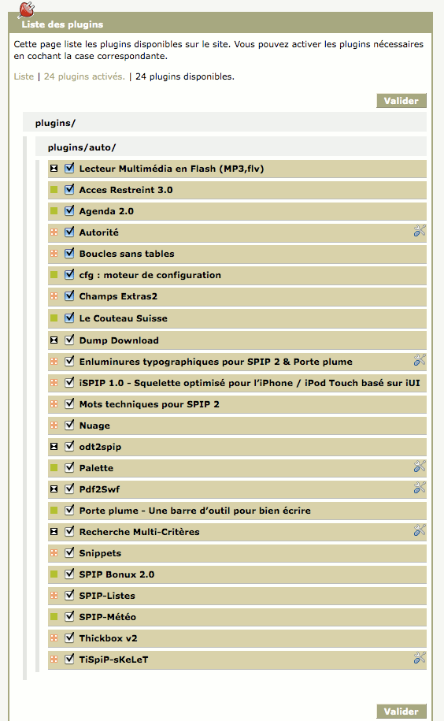
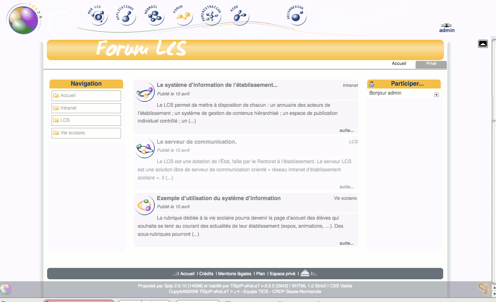

Nouvelle version, nouveau squelette.
Le squelette utilisé est le sqelette TiSpiP-sKeLeT, associé au plugin du même nom, entièrement paramétrable depuis l'espace privé par l'administrateur du LCS.
Plusieurs plugins sont livrés avec le paquet module.
Le Forum LCS n'est pas installé par défaut. Son installation s'effectue depuis la page "Administration" du LCS. Dans la rubrique "Gestion des modules" nous avons deux liens : le premier vers une page contenant tous les modules disponibles et le second vers une page contenant tous les modules installés. Bien évidemment l'installation du module spip du Forum se fera sur la page des "modules disponibles" en cliquant sur l'icône

L'installation du module terminée, un message confirme que tout s'est bien déroulé. Le module n'apparaît plus dans les modules disponibles mais bien sûr dans les modules installés.
A ce stade, l'installation du forum n'est pas terminée. Il reste à en configurer les différentes fonctions et à installer un affichage de base. Cette procédure est automatisée et met en place l'installation d'une configuration par défaut. Pour poursuivre, appliquez la procédure décrite et commentée ci-dessous.
Après l'installation du module, un nouveau bouton est venu se placer entre le bouton "webmail" et le bouton "administration".Cliquez sur ce bouton pour poursuivre l'installation.
En réaction à l'appel du forum, une fenêtre vous informe sur la poursuite de la procédure d'installation.

Cette étape peut durer plusieurs secondes. Vous êtes ensuite redirigé vers la page de validation des forums dans l'espace privé (backoffice) du Forum-LCS.

Seuls les plugins "spip" indispensables au fonctionnement du Forum LCS et de TiSpiP-sKeLeT sont validés par défaut. Pour utiliser toutes les fonctionnalités du système, il est cependant conseillé de valider tous les plugins spip proposés par défaut.

N'oubliez pas de vider le cache
Après toute modification importante de votre forum (personnalisation de l'affichage, modification de contenu), il est indispensable :
La page d'accueil par défaut du forum LCS
Vous pouvez ajouter des plugins en utlisant la procédure automatique (page gestion des plugins). Il est cependant conseillé de tester (sur un LCS de tests) la compatibilité des plugins ajoutés avec ceux en place. Il est en effet possible que certains plugins de SPIP présentent des incompatibilités entre eux.
Le squelette utilisé est le squelette TiSiP-sKeLeT. Vous trouverez la documentation sur le site TiSpiP-sKeLeT